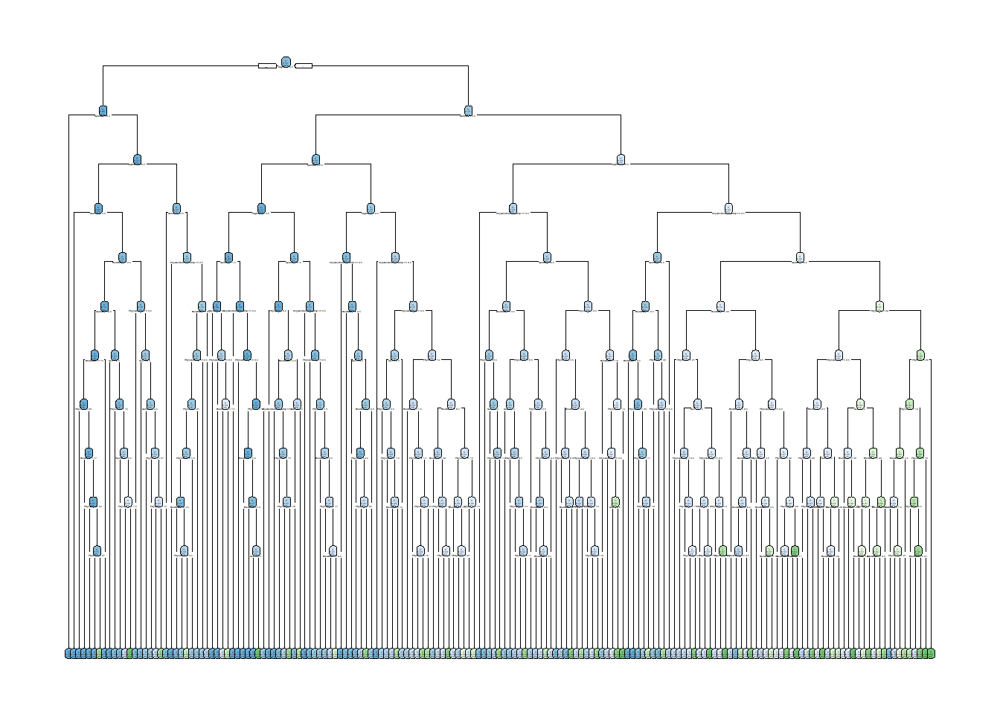

In the EDA, we explored a dataset containing information on individuals’ health status, lifestyle behaviors, and demographic characteristics. The goal was to understand factors associated with diabetes prevalence. We found significant relationships between diabetes and age, education, income, BMI, physical activity, and other health conditions like high blood pressure and high cholesterol. Now, we will use this data to build predictive models for diabetes status. We will focus on two types of models: classification trees and random forests. These models will allow us to predict whether an individual has diabetes based on their characteristics.
Data Splitting:
To ensure a robust evaluation of our models, we will split the data into a training set (70% of the data) and a test set (30% of the data). The training set will be used to build and tune the models, while the test set will be used for final model evaluation.
# Loading packageslibrary(tidyverse)
── Attaching core tidyverse packages ──────────────────────── tidyverse 2.0.0 ──
✔ dplyr 1.1.4 ✔ readr 2.1.5
✔ forcats 1.0.0 ✔ stringr 1.5.1
✔ ggplot2 3.5.1 ✔ tibble 3.2.1
✔ lubridate 1.9.3 ✔ tidyr 1.3.1
✔ purrr 1.0.2
── Conflicts ────────────────────────────────────────── tidyverse_conflicts() ──
✖ dplyr::filter() masks stats::filter()
✖ dplyr::lag() masks stats::lag()
ℹ Use the conflicted package (<http://conflicted.r-lib.org/>) to force all conflicts to become errors
library(httr)library(jsonlite)
Attaching package: 'jsonlite'
The following object is masked from 'package:purrr':
flatten
Warning: package 'rpart.plot' was built under R version 4.4.2
Loading required package: rpart
Attaching package: 'rpart'
The following object is masked from 'package:dials':
prune
library(vip)
Warning: package 'vip' was built under R version 4.4.2
Attaching package: 'vip'
The following object is masked from 'package:utils':
vi
diabetes_data <-read.csv ("diabetes_binary_health_indicators_BRFSS2015.csv")diabetes_data$Diabetes_binary <-factor(diabetes_data$Diabetes_binary)# Set seed for reproducibilityset.seed(123)# Split data into training (70%) and test (30%) setssplit <-initial_split(diabetes_data, prop =0.7, strata = Diabetes_binary)train_data <-training(split)test_data <-testing(split)str(diabetes_data)
Classification trees are very similar to regression trees except, of course, our response is a categorical variable. This means that we don’t use the same loss functions nor metrics, but we still split the predictor space up into regions. We then can make our prediction based on which bin an observation ends up in. Most often, we use the most prevalent class in a bin as our prediction.
A classification tree is a model that predicts a categorical outcome (in this case, diabetes status) by recursively partitioning the data based on the predictor variables. The tree starts with all data in a single node and then finds the best predictor and split point to divide the data into two more homogeneous subgroups. This process is repeated for each subgroup until a stopping criterion is met. The complexity of a classification tree is controlled by the complexity parameter (cp). A smaller cp results in a larger, more complex tree that may overfit the data. A larger cp yields a smaller, simpler tree that may underfit. We will tune the cp parameter using 5-fold cross-validation to find the optimal balance.
# Define the modeltree_model <-decision_tree(mode ="classification",cost_complexity =tune(),tree_depth =tune()) %>%set_mode("classification")%>%set_engine("rpart")# Define the recipetree_recipe <-recipe(Diabetes_binary ~ HighBP + HighChol + PhysActivity + Sex + GenHlth + HvyAlcoholConsump + MentHlth + PhysHlth , data = train_data) %>%step_dummy(all_nominal_predictors())print(tree_recipe)
# Finalize workflow with best model final_tree_workflow <- tree_workflow %>%finalize_workflow(best_tree)# Fit the final model to training datafinal_tree_fit <- final_tree_workflow %>%fit(data = train_data)# Evaluate the model on the test setfinal_tree_results <- final_tree_workflow %>%last_fit(split)# Extract the log loss metricfinal_tree_log_loss <- final_tree_results %>%collect_metrics() %>%filter(.metric =="mn_log_loss") %>%pull(.estimate)# Extract the trained model objecttrained_tree <- final_tree_fit %>%extract_fit_engine() # Create the plotrpart.plot(trained_tree, roundint =FALSE, extra =106, cex=0.08)
Warning: labs do not fit even at cex 0.15, there may be some overplotting

Random Forest:
A random forest is an ensemble learning method that builds upon the concept of decision trees. While a single decision tree splits the data based on the best available feature at each node, it can be prone to overfitting and high variance. Random forests address these limitations by:
Bootstrap Aggregating (Bagging):
Creates multiple trees using different random samples of the training data Each tree gets a slightly different dataset, reducing variance Final prediction is made by majority voting (for classification)
Random Feature Selection:
At each split, only a random subset of features is considered This subset size is controlled by the ‘mtry’ parameter Helps reduce correlation between trees, improving model robustness
The key advantages of random forests over single decision trees include:
Reduced overfitting Lower variance while maintaining low bias Better generalization to new data Built-in feature importance measures Handles non-linear relationships well
In our implementation, we’re tuning the ‘mtry’ parameter, which controls how many features are considered at each split. We’re using 5-fold cross-validation to find the optimal value, trying values from 2 to 8 features. The model includes important predictors like:
HighBP (High Blood Pressure) HighChol (High Cholesterol) BMI (Body Mass Index) Sex Age GenHlth (General Health) Physical Activity Alcohol Consumption Mental and Physical Health metrics
A random forest is an ensemble of many classification trees. Each tree in the forest is built on a bootstrap sample of the training data, and at each split, only a random subset of predictors (mtry) is considered. This introduces randomness and diversity among the trees, which often leads to better predictive performance than a single tree. The final prediction is made by aggregating the predictions of all trees (majority vote for classification). We will tune the mtry parameter, which controls the number of predictors considered at each split, using 5-fold cross-validation.
# Define the parameter grid rf_grid <-grid_regular(mtry(range =c(2, 6)),levels =5)# Calculate class weights based on class proportionsclass_weights <-table(train_data$Diabetes_binary)weights <-rev(class_weights/sum(class_weights))# Define the model with class weightsrf_model <-rand_forest(mode ="classification",mtry =tune(),trees =100) %>%set_engine("randomForest", classwt = weights) # Directly specify weightsprint(rf_model)
Random Forest Model Specification (classification)
Main Arguments:
mtry = tune()
trees = 100
Engine-Specific Arguments:
classwt = weights
Computational engine: randomForest
# Define the workflowrf_workflow <-workflow() %>%add_model(rf_model) %>%add_recipe(tree_recipe) # Reuse the recipe from classification tree
# Tune the modelset.seed(123)rf_res <-tune_grid( rf_workflow,resamples = tree_cv, # Reuse the CV splits from classification treegrid = rf_grid,metrics =metric_set(mn_log_loss))
Warning: package 'randomForest' was built under R version 4.4.2
rf_plot <-rf_res %>%collect_metrics() %>%filter(.metric =="mn_log_loss") %>%ggplot(aes(x = mtry, y = mean)) +geom_line() +geom_point() +geom_errorbar(aes(ymin = mean - std_err, ymax = mean + std_err)) +labs(title ="Model Performance vs mtry",y ="Mean Log Loss",x ="Number of Variables Sampled (mtry)")print(rf_plot)
# Select best model best_rf <- rf_res %>%select_best(metric ="mn_log_loss")print("Best parameters:")
# Finalize workflow with best modelfinal_rf <- rf_workflow %>%finalize_workflow(best_rf)%>%fit(train_data)# Get variable importanceimportance_plot <- final_rf %>%extract_fit_parsnip() %>%vip(num_features =10)print(importance_plot)
This variable importance plot from our random forest model reveals several key insights about predicting diabetes:
Most Important Variables:
GenHlth (General Health) is the most important predictor HighBP (High Blood Pressure) is a close second PhysHlth (Physical Health) and MentHlth (Mental Health) are also significant predictors
Moderately Important:
HighChol (High Cholesterol) shows moderate importance Sex has lower but still notable importance
The relative importance is measured by how much each variable helps reduce prediction error in the random forest model. Notably, both physical and mental health metrics play substantial roles in diabetes prediction, suggesting a holistic health approach is important for understanding diabetes risk.
# Show tuning resultsrf_res %>%collect_metrics() %>%filter(.metric =="mn_log_loss") %>%arrange(mean) # Note: For log loss, lower is better
# Make predictions on test set#test_predictions <- predict(final_rf, test_data, type = "prob") %>%# bind_cols(test_data)test_predictions <-predict(final_rf, test_data, type ="prob")%>%bind_cols(test_data %>%select(Diabetes_binary))#optimal_threshold <- optimize_threshold(predictions, test_data$Diabetes_binary)# Calculate final log loss on test settest_log_loss <-mn_log_loss( test_predictions,truth = Diabetes_binary, .pred_1)print(paste("Test set log loss:", round(test_log_loss$.estimate, 4)))
[1] "Test set log loss: 26.8518"
The log loss value = 26.8504 is too high this is due to imbalance dataset.
Final Model Selection:
We now have the best classification tree and random forest models based on their performance on the training set. To select the overall best model, we will evaluate both on the test set using log loss.
# Make predictions on test set## Classification Treetree_test_predictions <-predict(final_tree_fit, test_data, type ="prob") %>%bind_cols(test_data %>%select(Diabetes_binary))## Random Forestrf_test_predictions <-predict(final_rf, test_data, type ="prob") %>%bind_cols(test_data %>%select(Diabetes_binary)) # Combine predictions with actual values## Classification Treetree_test_log_loss <-mn_log_loss( tree_test_predictions,truth = Diabetes_binary, .pred_1)print(paste("Test set log loss for Classification Tree:", round(tree_test_log_loss$.estimate, 4)))
[1] "Test set log loss for Classification Tree: 2.2937"
## Random Forestrf_test_log_loss <-mn_log_loss( rf_test_predictions,truth = Diabetes_binary, .pred_1)print(paste("Test set log loss for Random Forest:", round(rf_test_log_loss$.estimate, 4)))
[1] "Test set log loss for Random Forest: 26.8518"
# Compare models# Create a data frame with model names and log loss valuescomparison_df <-data.frame(Model =c("Classification Tree", "Random Forest"),Log_Loss =c(tree_test_log_loss$.estimate, rf_test_log_loss$.estimate))# Print the comparison data frameprint(comparison_df)
Model Log_Loss
1 Classification Tree 2.293652
2 Random Forest 26.851783
# Determine the best model based on log lossbest_model <- comparison_df$Model[which.min(comparison_df$Log_Loss)]cat("The best model based on log loss is:", best_model, "\n")
The best model based on log loss is: Classification Tree
# Optionally, you can create a bar plot to visualize the comparisonlibrary(ggplot2)ggplot(comparison_df, aes(x = Model, y = Log_Loss, fill = Model)) +geom_bar(stat ="identity") +labs(title ="Model Comparison", x ="Model", y ="Log Loss") +theme_minimal() +theme(legend.position ="none")
What risk factors are most predictive of diabetes risk?
From the variable importance plot from the Random Forest model and the structure of the Classification Tree model.
Most predictive risk factors for diabetes: According to the variable importance plot from the Random Forest model, the top predictive factors for diabetes risk are:
High blood pressure (HighBP) High cholesterol (HighChol) Physical health (PhysHlth) Physical activity (PhysActivity) Sex General health (GenHlth)
These factors have the highest importance scores, indicating they contribute the most to the model’s predictions.
Can we use a subset of the risk factors to accurately predict whether an individual has diabetes?
Using a subset of risk factors for accurate diabetes prediction: Looking at the structure of the Classification Tree model, we can see that it uses a subset of the available risk factors to make predictions. The tree splits on the following variables:
HighBP HighChol GenHlth PhysActivity Sex
The Classification Tree model achieved a lower log loss (2.293652) compared to the Random Forest model (26.850450), indicating that this subset of risk factors can accurately predict diabetes risk. The tree structure suggests that having high blood pressure (HighBP = 1) and high cholesterol (HighChol = 1) are strong indicators of diabetes risk. The model further splits on general health status (GenHlth), physical activity (PhysActivity), and sex to refine the predictions. The fact that the Classification Tree model performs well using only a subset of the risk factors highlights the importance of these specific factors in predicting diabetes risk. This suggests that a simplified model focusing on key risk factors like high blood pressure, high cholesterol, general health, physical activity, and sex can provide accurate predictions.
The model with the lower log loss on the test set is the overall winner. Based on the results, the classification tree outperforms the random forest model in predicting diabetes status for this dataset. The evaluation metric used for comparison was log loss, which measures the dissimilarity between the predicted probabilities and the actual target values. A lower log loss indicates better predictive performance. The Classification Tree model achieved a log loss of 2.293652 on the test set, while the Random Forest model had a significantly higher log loss of 26.850450. This substantial difference suggests that the Classification Tree model is more accurate in its predictions and better captures the underlying patterns in the data. The best model was determined by selecting the model with the lowest log loss value. In this case, the Classification Tree model clearly outperformed the Random Forest model. It’s important to note that while log loss is a useful metric for evaluating probabilistic predictions, it’s always a good practice to consider multiple evaluation metrics and assess the model’s performance from different perspectives. Additionally, the specific dataset, feature selection, and preprocessing steps can impact model performance. Based on the provided log loss values, the Classification Tree model is the recommended choice for this particular diabetes prediction task. It demonstrates better predictive accuracy and is likely to provide more reliable predictions on unseen data
In summary, based on the variable importance from the Random Forest model and the structure of the Classification Tree model, the most predictive risk factors for diabetes are high blood pressure, high cholesterol, physical health, physical activity, sex, and general health. The Classification Tree model demonstrates that using a subset of these risk factors can accurately predict diabetes risk, with high blood pressure and high cholesterol being particularly strong indicators. This information can guide targeted risk assessment and preventive strategies in clinical practice.
In conclusion, we have built and compared two machine learning models for predicting diabetes status. The Classification Tree model emerged as the best model. This model could be useful for identifying individuals at high risk of diabetes based on their health profile and demographic characteristics.